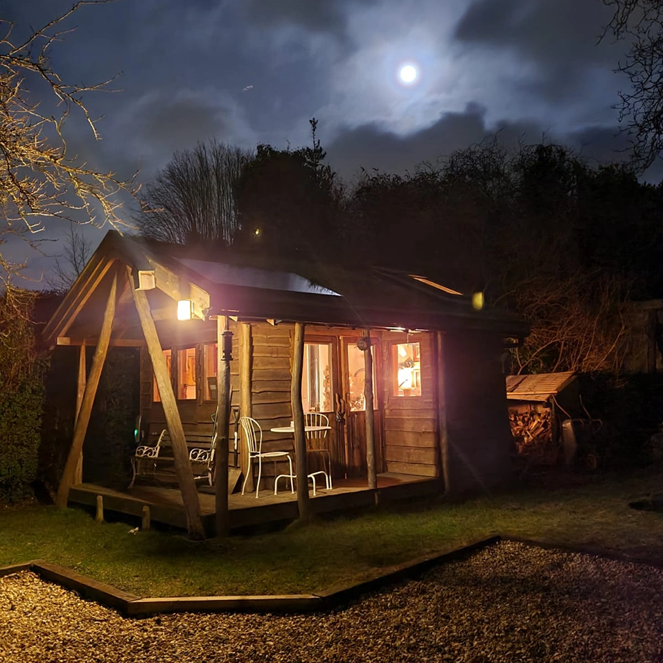

David Stokes

The Anglo Saxons have fascinated me ever since I studied history at Oxford University. When I graduated, my focus shifted from the past to a path that glistened enticingly with gold, and I went into business. Eventually starting my own enterprise, I learned that even successful start-ups don’t pay the bills for quite some time. To supplement my income, I tried writing and took an idea to a publishing friend of mine. He said I should get a day job, preferably one where I could practice my writing. Following his advice, I became an academic and discovered that there was no good textbook in my subject for my students. So I wrote one of my own which was published in 1992 and is still going strong in its 8th edition over 30 years later, entitled Small Business Management and Entrepreneurship. I wrote several other textbooks, before turning my hand to fiction.
Creative writing was harder than I thought, so I took a course where I learned of the importance of finding a ‘unique voice’ in your writing. At the time I was a long-distance carer for my dad who was nearly 100 years old but remarkably healthy and living on his own. I phoned him often and, as he liked to talk, I was listening to his ‘unique voice’ for over an hour every day. I used our conversations to not only write up his autobiography, A Century of life, but also to create a fictional story using many elements of his character and life-history. The result was my first novel about a 20th century man who becomes involved in the 21st century problem of human trafficking, The Happy Ending. (Yes, the double meaning is intentional).
That got me into writing stories about characters from the past – which led me back to the Anglo-Saxons, and historical fiction. I thought I would write about immigrant warlords carving out fiefdoms amongst the native Britons to create ever-growing kingdoms that finally became England. Yet I found myself more interested in the unsung characters without whom the kings would never have drawn breath – the Anglo-Saxon women overlooked by the historians of the time who were nearly all monks.
Oriel College, Oxford · Kingston University · Emeritus Professor · Doctorate in Business
A unique voice
Although my first Anglo-Saxon novel, Angles or Angels? is the story of the showdown between competing warlords in northern England, it is also the story of Acha, the peace weaver who arbitrates between them and is mother to Oswald, the great king of Northumbria who succeeds them.
My latest book tells the story of another unsung heroine, Æthelflæd, Lady of the Mercians. In King Alfred’s Daughter, you will read about the many crucial roles she played: war leader, town builder, church founder and nurturer of the future first king of all England.
Like the Anglo-Saxon warriors, I couldn’t have done any of this without the support of a strong female in my life. I married Sue in the 70’s, we had children in the 80’s and she developed a career in the NHS. Lately our paths have converged, and she is now an osteo-archaeologist. Together, we are digging up the past.
Our children have all taken it upon themselves to save the planet through their work. For a while I was content to leave it to them. Their generation seemed capable enough of sorting out the mess they’d inherited from us. When I realised the extent of the problem, I felt I had to do something and have become a bit of an environmental activist myself. To illustrate the issues for younger people, I wrote The Singing Bowl which tells of a parallel world inhabited by competing ancient species that are encountering similar issues to climate change on Earth.
Read the "Meet the Author" Story on Instagram

My Writing Cabin
Authors write in all sorts of strange places.
When he was exiled to Guernsey, Victor Hugo wrote standing up at a window so that he could glimpse his native France on a clear day; J.K. Rowling composed the first volumes of Harry Potter in a variety of coffee houses in Edinburgh. Writing a book takes me a long time – over a year of writing or editing almost every day. I didn’t fancy standing up all that time and, although there are enough cafés in my hometown of Guildford to support an army of authors, they are full of distractions as I have lived here for so long.
My solution was to build a cabin in my garden, off grid to minimise disturbance. It has been a source of huge comfort: it greets me in the early morning whilst I fiddle with the stove, inspires me as I watch the squirrel break into my latest squirrel-proof bird feeder, relaxes me as I pace around, wondering why I haven’t written anything yet, and lulls me into drowsiness when the heat from the fire finally kicks in. Having a cabin has made me give up a daily word count target – it’s the process that counts after all.
‘One glance at a book and you hear the voice of another person, perhaps someone dead for 1000 years. To read is to travel through time.’ — Carl Sagan

Sermon of the Wolf
Emma of Normandy was married twice — first to Ethelred the Unready, then to his conqueror, the Danish king Cnut. She was queen of England for over thirty years, navigating Viking invasions, royal murders, political betrayals, and the slow unravelling of a dynasty that had ruled for five centuries. Sermon of the Wolf follows Emma from her arrival as a teenage bride at a court already under siege, through the catastrophic failures of Ethelred's reign and the surprising stability of Cnut's, to the moment when the world she had shaped began to fall apart.
The title comes from the famous sermon preached by Archbishop Wulfstan as the Vikings tightened their grip — a warning that the apocalypse was coming, and that the English had brought it on themselves. He was not wrong. This is the gripping story of the end of Anglo-Saxon England, based closely on the Anglo-Saxon Chronicle, the sagas, and surviving charters, with detailed historical notes.